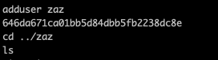

Bonus2
Etape 1 :
Recuper l'iso sur sa machine et monter le disque

Etape 2 :
recuperer les fichiers de l'iso

Etape 4 :
On vas dan le home de root puis on cat le fichier.bash_history
Etape 5 :
On peut voir les identifiants pour zaz
Etape suiavnte 5:
on resoud l'egnime de zaz pour devenir root